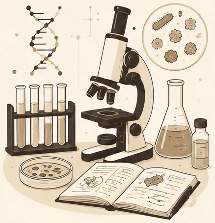
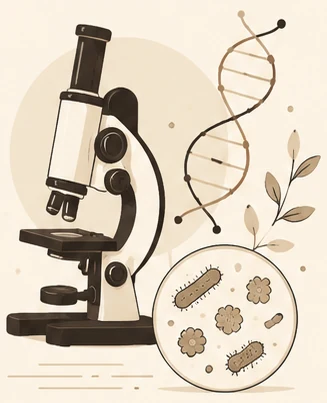
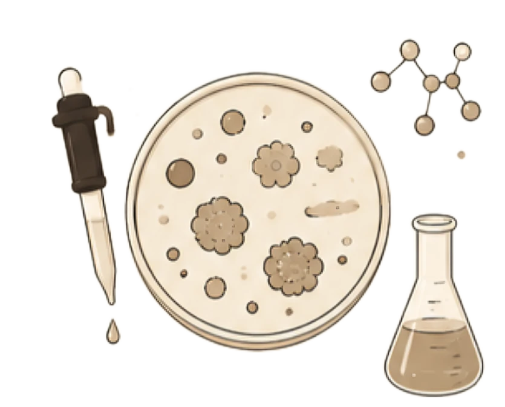
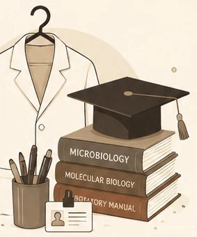

“You have a right to perform your work, but never to its fruits.”
Bhagavad Gita 2.47Detail-oriented and research-driven, with hands-on experience across clinical diagnostics, microbial culturing, molecular biology, and NABL documentation. Skilled in quality control, laboratory management, and biosafety — looking to bring precision to diagnostic, clinical, or research-based work in healthcare or microbiology.

My work sits at the intersection of the bench and the record book — running assays with care, and documenting them with the same rigor NABL and ISO 17025 demand. Over the past several years I've moved between diagnostic labs, biotech training programmes, and research centres, picking up instrumentation (GC-MS), molecular methods (PCR, DNA/RNA extraction), and the quieter disciplines of quality control and biosafety along the way.
I studied Microbiology through to a Master's at Gujarat University, with a thesis on the antioxidant activity of marine pigment-producing bacteria, then trained further in Medical Laboratory Technology at GCRI, Ahmedabad. I'm currently open to diagnostic, clinical, or research-based roles that need someone equally comfortable at the bench and in the audit trail.

Verified RecordProvided academic and hands-on lab training and technical guidance to students and interns. Assisted with experimental documentation, research planning, research paper writing, proofreading, and content writing on demand. Supported lab workflow and training initiatives on a flexible schedule.
Gained hands-on exposure to advanced analytical instruments including GC-MS. Assisted in preparation, sterilization, and calibration of instruments in line with ISO 17025 and NABL standards, with exposure to GMP. Participated in NABL audits, learning laboratory compliance, quality assurance, and quality control systems.
Participated in molecular diagnostics and biotech process development training. Worked with PCR and learnt Patho-plus software, alongside clinical diagnostics and phlebotomy. Gained exposure to HACCP and laboratory safety practices.
Screened and identified lactic acid bacteria from a probiotic formulation (Yakult) using standard microbiological techniques. Conducted biochemical tests and maintained culture stocks under supervision.


Thesis: Antioxidant activity of marine pigment-producing bacteria using Response Surface Methodology (RSM).
Microbes, Forensic Science & Fingerprinting, Women's Health, Cell Biology
Digestive Health CME Series — Celiac Disease, LFTs, Esophageal Disorders
Understanding Dementia
Biotechnopreneurship™ Awareness Programme
Presented the Genie machine (LAMP method)
Volunteered in cancer and blood donation awareness camps
Thank you for visiting my portfolio. I am always happy to connect with recruiters, laboratories, research organizations, biotechnology companies, pharmaceutical industries, and healthcare professionals regarding opportunities in microbiology, diagnostics, laboratory research, quality assurance, and biotechnology. Feel free to reach out through email or LinkedIn.
Closing Reflection
Inspired by the Bhagavad Gita · Chapter 7
Chapter 7 · Jñāna Vijñāna Yoga
मनुष्याणां सहस्रेषु कश्चिद् यतति सिद्धये ।
यततामपि सिद्धानां कश्चिन्मां वेत्ति तत्त्वतः ॥
Manuṣyāṇāṁ sahasreṣu kaścid yatati siddhaye,
yatatām api siddhānāṁ kaścin māṁ vetti tattvataḥ.
“Among thousands, only a few strive for perfection. And among those who strive, only a few truly know Me in truth.
Whether in science or in life, every meaningful discovery begins with curiosity, grows through patience, and is revealed only to those who keep moving forward.
Still learning. Still discovering.
Vidhi Panchal